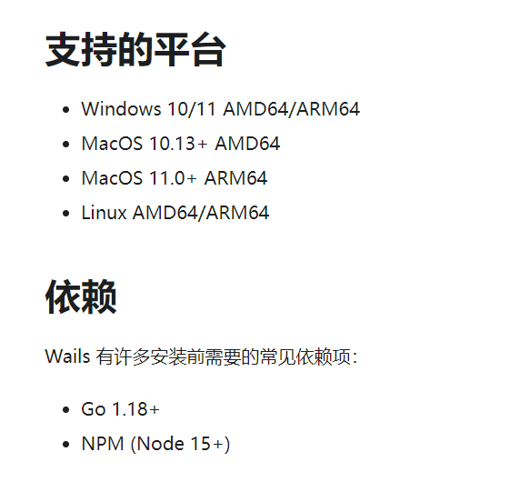
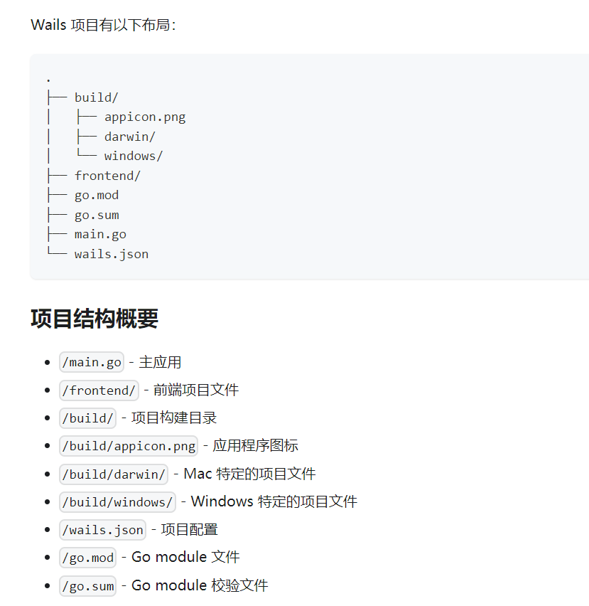
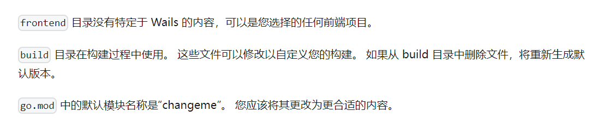
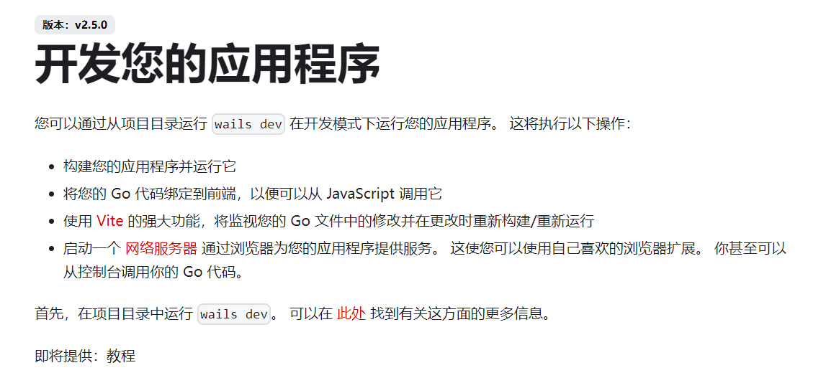
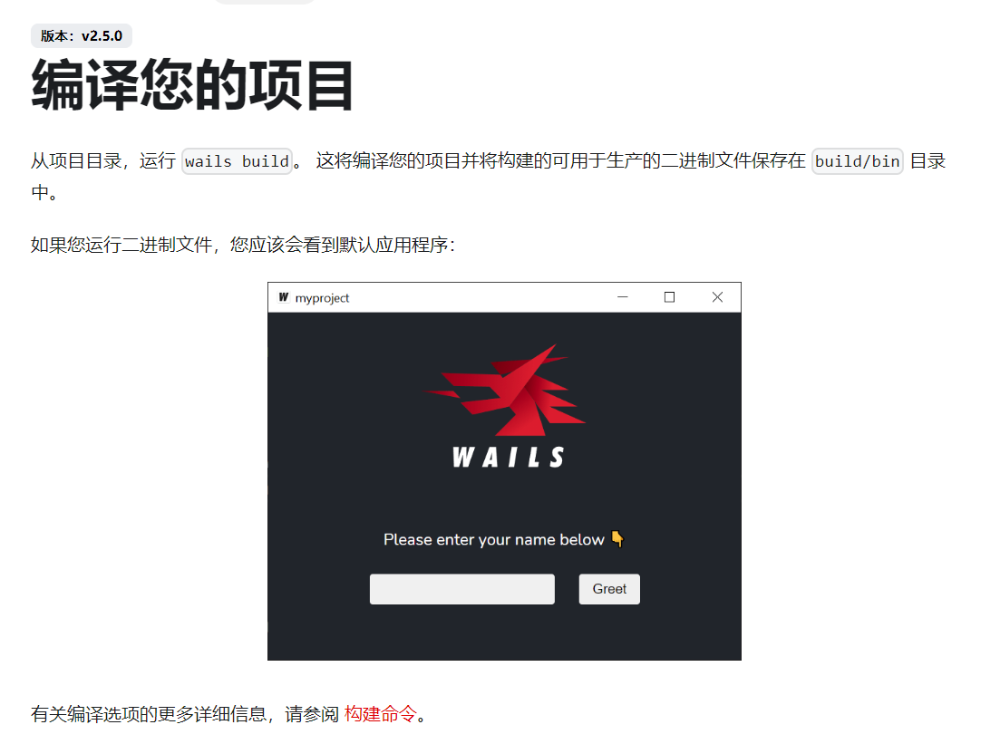
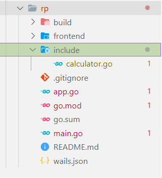
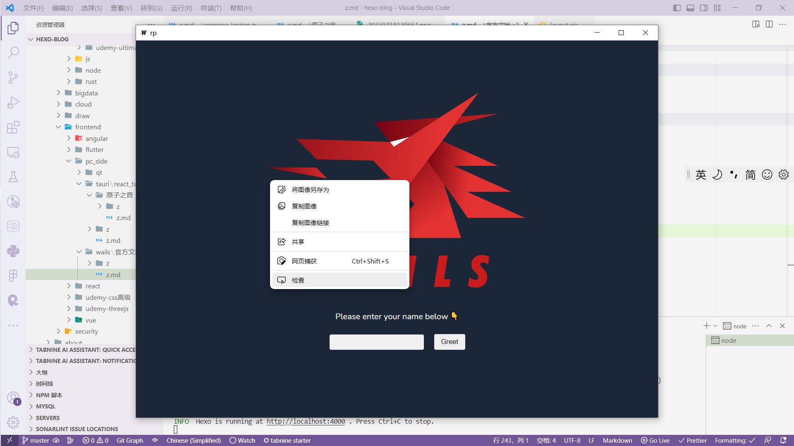
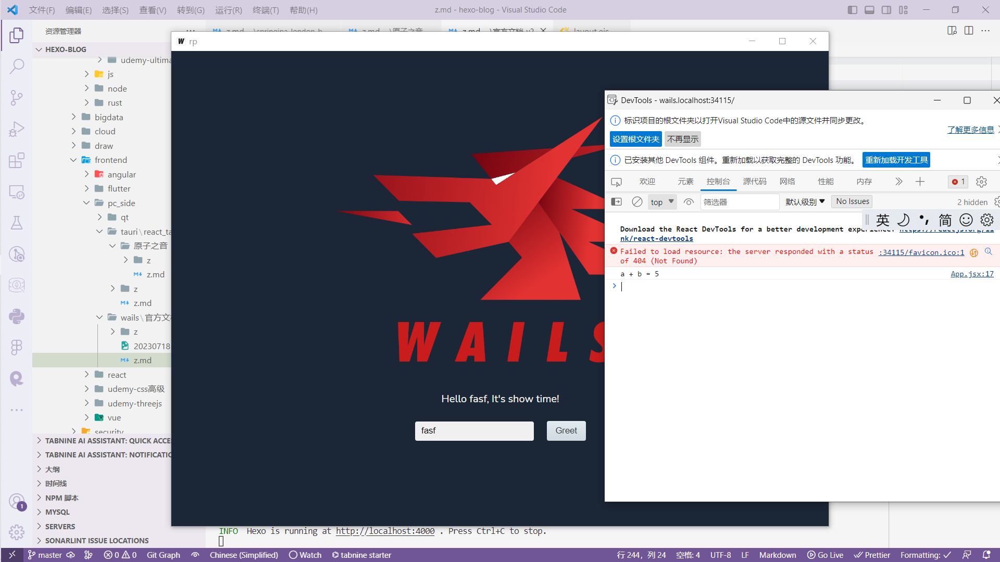
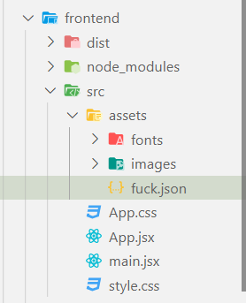

安装

go install github.com/wailsapp/wails/v2/cmd/wails@latest
# 检查wails是否正确安装
wails doctor
创建项目
wails init -n myproject -t <前端框架模板(react | vue | svelte | preact | lit | vanilla)>


开发
wails dev

编译
wails build

angular
虽然 Wails 没有 Angular 模板，但可以将 Angular 与 Wails 一起使用。
"frontend:build": "npx ng build",
"frontend:install": "npm install",
"frontend:dev:watcher": "npx ng serve",
"frontend:dev:serverUrl": "http://localhost:4200",
如何在别的 go 文件里定义 go 方法并给前端使用
1. 创建 include/xxx.go

2. 复制 App.go 的内容到新建的 go 文件，在 App.go 和 xxx.go 里添加用于设置上下文的 SetContext 方法
package include
import (
"context"
"fmt"
)
// App struct
type Calculator struct {
ctx context.Context
}
// NewApp creates a new App application struct
func NewCalculator() *Calculator {
return &Calculator{}
}
// startup is called when the app starts. The context is saved
// so we can call the runtime methods
func (c *Calculator) startup(ctx context.Context) {
c.ctx = ctx
}
// 用于wails.Run时给结构体设置上下文
func (c *Calculator) SetContext(ctx context.Context) {
c.ctx = ctx
}
3. 在 xxx.go 里添加要被前端使用的方法
package include
import (
"context"
"fmt"
)
// ...
// 让前端调用的方法
// 计算a+b
func (c *Calculator) Add(a int, b int) string {
return fmt.Sprintf("a + b = %v", (a + b))
}
4. 修改 main.go
package main
import (
"embed"
"context"
// rp是go.mod里定义的模块名
// include是Calculator结构体所在的包
"rp/include"
"github.com/wailsapp/wails/v2"
"github.com/wailsapp/wails/v2/pkg/options"
"github.com/wailsapp/wails/v2/pkg/options/assetserver"
)
//go:embed all:frontend/dist
var assets embed.FS
func main() {
// Create an instance of the app structure
app := NewApp()
cal := include.NewCalculator()
// Create application with options
err := wails.Run(&options.App{
Title: "rp",
Width: 1024,
Height: 768,
AssetServer: &assetserver.Options{
Assets: assets,
},
BackgroundColour: &options.RGBA{R: 27, G: 38, B: 54, A: 1},
// OnStartup: app.startup,
// 新的startup方法，我们将上下文注入到结构体
OnStartup: func(ctx context.Context) {
app.SetContext(ctx)
cal.SetContext(ctx)
},
// 绑定结构体实例
Bind: []interface{}{
app,
cal,
},
})
if err != nil {
println("Error:", err.Error())
}
}
5. 在 frontend 的 wailsjs/go 下新建/include/xxx.js 和/include/xxx.d.ts
// @ts-check
// Cynhyrchwyd y ffeil hon yn awtomatig. PEIDIWCH Â MODIWL
// This file is automatically generated. DO NOT EDIT
export function Add(arg1, arg2) {
// 可以看出这里是go[包名][结构体名][方法名](参数)
return window["go"]["include"]["Calculator"]["Add"](arg1, arg2);
}
// 这个不用写，我们给go结构体添加SetContext方法后运行
// wails自动添加上
export function SetContext(arg1) {
return window["go"]["include"]["Calculator"]["SetContext"](arg1);
}
// Cynhyrchwyd y ffeil hon yn awtomatig. PEIDIWCH Â MODIWL
// This file is automatically generated. DO NOT EDIT
import { context } from "../models";
// 在这里指定参数的类型和返回的类型
export function Add(arg1: number, arg2: number): Promise<string>;
// 这个不用写，我们给go结构体添加SetContext方法后运行
// wails自动添加上
export function SetContext(arg1: context.Context): Promise<void>;
6. 在前端使用
import { useState } from 'react';
import logo from './assets/images/logo-universal.png';
import './App.css';
// 导入go方法
import { Greet } from "../wailsjs/go/main/App";
import { Add } from "../wailsjs/go/include/calculator";
function App() {
// ...
function greet() {
// 使用了App.Greet方法
Greet(name).then(updateResultText);
// 使用了Calulator.Add方法
Add(2, 3).then(
// 方法返回了字符串
res => {
// 操作
console.log(res);
}
)
}
return (
// ...
)
}
export default App
7. 运行
wails dev
右键打开控制台，可以看到输出


通过 wails 提供的服务器获取前端 assets 里的资源
在 assets 里创建 fuck.json

获取
wails dev
fuck.json: http://127.0.0.1:5173/src/assets/fuck.json
菜单，没搞懂
wailsjs/go/runtime.js
wailsjs 下的文件每次都会自动生成
/*
_ __ _ __
| | / /___ _(_) /____
| | /| / / __ `/ / / ___/
| |/ |/ / /_/ / / (__ )
|__/|__/\__,_/_/_/____/
The electron alternative for Go
(c) Lea Anthony 2019-present
*/
// 打印日志
export function LogPrint(message) {
window.runtime.LogPrint(message);
}
export function LogTrace(message) {
window.runtime.LogTrace(message);
}
export function LogDebug(message) {
window.runtime.LogDebug(message);
}
export function LogInfo(message) {
window.runtime.LogInfo(message);
}
export function LogWarning(message) {
window.runtime.LogWarning(message);
}
export function LogError(message) {
window.runtime.LogError(message);
}
export function LogFatal(message) {
window.runtime.LogFatal(message);
}
// 此方法为给定的事件名称设置一个侦听器，但最多只能触发 counter 次。 它返回 一个函数来取消侦听器。
export function EventsOnMultiple(eventName, callback, maxCallbacks) {
return window.runtime.EventsOnMultiple(eventName, callback, maxCallbacks);
}
export function EventsOn(eventName, callback) {
return EventsOnMultiple(eventName, callback, -1);
}
export function EventsOff(eventName, ...additionalEventNames) {
return window.runtime.EventsOff(eventName, ...additionalEventNames);
}
export function EventsOnce(eventName, callback) {
return EventsOnMultiple(eventName, callback, 1);
}
// 触发事件
export function EventsEmit(eventName) {
let args = [eventName].slice.call(arguments);
return window.runtime.EventsEmit.apply(null, args);
}
// 执行“重新加载”（重新加载当前页面）。
export function WindowReload() {
window.runtime.WindowReload();
}
// 重新加载应用程序前端
export function WindowReloadApp() {
window.runtime.WindowReloadApp();
}
// 设置窗口置顶
export function WindowSetAlwaysOnTop(b) {
window.runtime.WindowSetAlwaysOnTop(b);
}
// 窗口设置系统主题相关，仅限 Windows。-start
export function WindowSetSystemDefaultTheme() {
window.runtime.WindowSetSystemDefaultTheme();
}
export function WindowSetLightTheme() {
window.runtime.WindowSetLightTheme();
}
export function WindowSetDarkTheme() {
window.runtime.WindowSetDarkTheme();
}
// 窗口设置系统主题相关，仅限 Windows。 -end
// 窗口居于显示器中间
export function WindowCenter() {
window.runtime.WindowCenter();
}
// 设置窗口标题栏中的文本。
export function WindowSetTitle(title) {
window.runtime.WindowSetTitle(title);
}
// 全屏相关 - start
export function WindowFullscreen() {
window.runtime.WindowFullscreen();
}
export function WindowUnfullscreen() {
window.runtime.WindowUnfullscreen();
}
export function WindowIsFullscreen() {
return window.runtime.WindowIsFullscreen();
}
// 全屏相关 - end
// 窗口尺寸 - start
export function WindowGetSize() {
return window.runtime.WindowGetSize();
}
export function WindowSetSize(width, height) {
window.runtime.WindowSetSize(width, height);
}
export function WindowSetMaxSize(width, height) {
window.runtime.WindowSetMaxSize(width, height);
}
export function WindowSetMinSize(width, height) {
window.runtime.WindowSetMinSize(width, height);
}
// 窗口尺寸 - end
// 设置位置
export function WindowSetPosition(x, y) {
window.runtime.WindowSetPosition(x, y);
}
export function WindowGetPosition() {
return window.runtime.WindowGetPosition();
}
export function WindowHide() {
window.runtime.WindowHide();
}
export function WindowShow() {
window.runtime.WindowShow();
}
// 最大最小化相关 - start
export function WindowMaximise() {
window.runtime.WindowMaximise();
}
// 切换窗口最大最小化
export function WindowToggleMaximise() {
window.runtime.WindowToggleMaximise();
}
// 退出最大化
export function WindowUnmaximise() {
window.runtime.WindowUnmaximise();
}
export function WindowIsMaximised() {
return window.runtime.WindowIsMaximised();
}
export function WindowMinimise() {
window.runtime.WindowMinimise();
}
export function WindowUnminimise() {
window.runtime.WindowUnminimise();
}
// 最大最小化相关 - end
export function WindowSetBackgroundColour(R, G, B, A) {
window.runtime.WindowSetBackgroundColour(R, G, B, A);
}
export function ScreenGetAll() {
return window.runtime.ScreenGetAll();
}
export function WindowIsMinimised() {
return window.runtime.WindowIsMinimised();
}
export function WindowIsNormal() {
return window.runtime.WindowIsNormal();
}
// 使用系统默认浏览器打开给定的 URL。
export function BrowserOpenURL(url) {
window.runtime.BrowserOpenURL(url);
}
export function Environment() {
return window.runtime.Environment();
}
export function Quit() {
window.runtime.Quit();
}
export function Hide() {
window.runtime.Hide();
}
export function Show() {
window.runtime.Show();
}
// 剪贴板 - start
export function ClipboardGetText() {
return window.runtime.ClipboardGetText();
}
export function ClipboardSetText(text) {
return window.runtime.ClipboardSetText(text);
}
// 剪贴板 - end
引入
import * as rt from "../wailsjs/runtime/runtime";
import * as App from "../wailsjs/go/main/App.js";